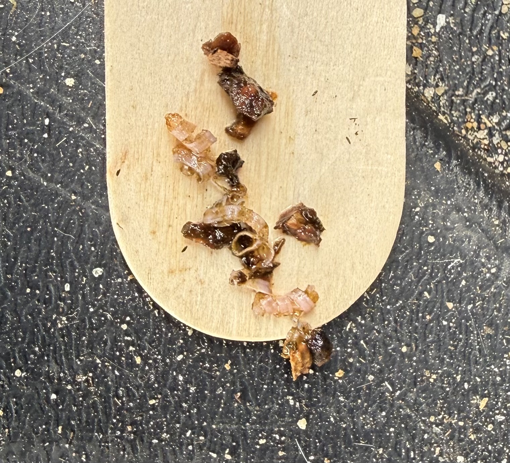

Three weeks in,
the buckets start talking.
The first inspection checkpoint gave us no slam-dunk answer about mosquito eggs or larvae. It did give us something better: a baseline, two dramatically different recipes, and a much clearer idea of what we need to measure next.
What we set out to do
Six pink Bti dunk buckets were installed around the property on August 7. The basic idea was simple: create standing water that might appeal to egg-laying mosquitoes, but treat it with Bacillus thuringiensis israelensis (Bti) so feeding mosquito larvae cannot successfully develop into adults.
The pink buckets began with about three gallons of water, roughly two handfuls of leaves from the same source tree, and one whole mosquito dunk. The tree species has not yet been confirmed, so we are deliberately not calling those leaves oak or maple in the formal record.
Correction preserved in the record: the physical bucket now designated Bucket 1 was originally marked “3” and later corrected to “1.” We are keeping both photographs so future readers can see exactly how the numbering confusion happened.


Water depth gave us our first clean comparison.
| Pink bucket | Water depth | Field context | Egg scraping |
|---|---|---|---|
| 0 “Ground Zero” | 8" | Closest to the area where biting is routinely experienced. Adult mosquitoes were observed buzzing around the bucket during inspection and the observer was bitten. | Inconclusive |
| 1 | 7" | Corrected bucket ID. | Inconclusive |
| 3 | 2.5" | Previously knocked over by Finn; substantial water loss. | Inconclusive |
| 4 | 4" | Previously about 9"; knocked over after Izzy’s leash wrapped around it. | Inconclusive |
| 5 | 8" | Heavy organic debris; good tea-colored water; dunk present in pieces. | Inconclusive |
| 6 | 8" | No major water-loss event recorded at this inspection. | Inconclusive |
“Inconclusive” means no mosquito egg was positively identified from the photograph. It does not mean eggs were proved absent.
Ground Zero is worth watching.
Bucket 0 sits nearest the place where mosquito bites are routinely experienced while outside with the dogs. During the August 29 inspection, adult mosquitoes were visibly active around the site and the observer was bitten.
That proves adult mosquito pressure is high at the location. It does not prove the mosquitoes were attracted by the bucket or had laid eggs in it. Bucket 0 therefore becomes a particularly useful observation site rather than an automatic success story.
The egg-scraping test was gloriously imperfect.
We tried scraping the inside waterline with wooden craft tongue depressors and transferring the material with clear tape to a light background. Every sample produced wet plant fragments, biofilm and assorted mystery specks. None produced an object we could confidently identify from the photographs as a mosquito egg.



Our conclusion is not “there were no eggs.” Our conclusion is that this collection method is not reliable enough to answer the egg question. That is exactly the sort of methodological lesson a field project should preserve.
Then the blue buckets arrived.
Wet area beyond the Community Center parking lot
Installed August 22. Blue bucket, four lid openings, roughly ⅓ to ½ bucket of water initially, ¼ dunk, and a large quantity of freshly cut marsh vegetation. After seven days: roughly half full, distinctly stinky and scummy.

Front corner of the Community Center
Installed August 22 with the same general recipe: blue bucket, four lid openings, ¼ dunk, and a very heavy vegetation load. After seven days: about one-third full, strong decomposition odor and heavy surface scum.

These are not a controlled single-variable test. Bucket color, lid design, vegetation quantity, vegetation type, Bti dose and location all differ from the pink group. But they give us an extremely useful practical comparison: mild leaf infusion versus aggressive fresh-vegetation fermentation.
What the Bti label changed for us
The original pink-bucket recipe used one whole mosquito dunk per bucket. Current EPA labeling for DUNKS® doses the product by surface area of standing water, not water depth. The 2026 label calls for ¼ dunk for 0–25 square feet of standing-water surface and says to allow a minimum of 48 hours for control. It also notes that some larvae may partially develop before dying.
That means the whole dunk in each small pink bucket was more Bti than the normal labeled rate requires. We are not rewriting history: the overdosed pink buckets remain part of the original experiment. Future bucket recipes will follow the label unless the experiment gives us a legitimate reason, consistent with the label, to adjust for unusually high organic load.
What we can say after Report #1
We have not yet proved that the pink buckets are effective mosquito attractants.
We also have not proved that they are ineffective.
No living larvae were positively identified at this checkpoint, but Bti is designed to kill larvae after they feed, so a treated bucket can be used by mosquitoes without maintaining a conspicuous population of wrigglers. Our egg-detection method was too crude to resolve that ambiguity.
What changes now
1. Measure water depth
Record inches of water before any refill or adjustment. The intact pink buckets naturally clustered around 7–8 inches.
2. Observe before stirring
Watch the water quietly first for active wrigglers, sluggish larvae, motionless suspected larvae, pupae or egg rafts.
3. Improve egg detection
Develop a removable, consistent oviposition surface rather than scraping dirty bucket walls after the fact.
4. Track odor
Add a simple odor score so the mild pink infusion and fermenting blue recipe can be compared over time.
5. Preserve the recipes
Do not “fix” every bucket into sameness. The two recipe groups are now producing useful comparative observations.
6. Ask the real question
Are mosquitoes actually choosing these buckets to lay eggs, and if so, which recipe gets chosen more often?
Sources & label notes
EPA pesticide label for DUNKS® (EPA Reg. No. 6218-87, label dated Feb. 11, 2026): dosage by surface area, ¼ dunk for 0–25 sq. ft., up to 30 days of suppression under labeled conditions, and a minimum 48 hours for control. Summit Responsible Solutions product information also describes Bti as being ingested by mosquito larvae and the product as a slow-release treatment.
EPA label • Manufacturer product information
This project is educational citizen science, not public-health or pesticide-application advice. Always follow the product label and applicable local guidance.